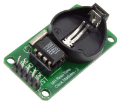

Connect a labeled DS1302 RTC module to an Uno-compatible board, set its calendar once, and read the saved date and time through the Serial Monitor.
Gather the parts
Uno-compatible board and USB cable
Breadboard
DS1302 RTC module with its pins clearly labeled
5 male-to-male jumper wires
The exact backup battery specified for that module, only if its maker says it is required
Safety boundary: unplug USB before changing wires. This lesson is for a labeled, low-voltage DS1302 breakout—never connect a bare DS1302 chip using this page as a substitute for its crystal, power, and backup circuit. Coin cells can be swallowed and can cause severe injury; keep them away from children and pets. Do not short, crush, heat, disassemble, recharge, or replace a battery unless the module maker identifies the exact compatible type and procedure. The sketch does not enable the DS1302 trickle charger: never charge a battery merely because it fits the holder. Stop if anything becomes hot, smells unusual, or looks damaged.
Build it, one check at a time
Step 1 — Meet the timekeeper
The DS1302 is a real-time clock/calendar chip. It counts seconds, minutes, hours, day, date, month, and year; a backup supply can keep that information when the Arduino’s USB power is absent. It talks over three signal wires: CE chooses the chip, I/O carries data both ways, and SCLK provides the timing. This is a three-wire serial interface, but it is not compatible with SPI.

Reference image: ErriezDS1302, extras/DS1302.png, an unchanged non-generated module photo from the retained source pack. Copyright Erriez; used under the MIT License. It shows a module style, not a wiring map; use the labels printed on your own module. The public project and license are linked in Reference pages.
Step 2 — Wire the five labeled connections
Follow the labels on your module, not the order of pins in a photo. For the Uno-compatible AVR mapping used by the retained Erriez example, make these five connections:
Arduino 5V → DS1302 VCC
Arduino GND → DS1302 GND
Arduino D2 → DS1302 CLK (sometimes printed SCLK)
Arduino D3 → DS1302 DAT (sometimes printed I/O)
Arduino D4 → DS1302 RST/CE (CE was called RST in older datasheet revisions)
Do not substitute VCC1/VCC2 bare-chip pin names for breakout labels. A module’s battery holder and onboard circuit vary, so a board with missing or different labels is a reason to stop and find its own documentation.
Step 3 — Add the library
In the Arduino IDE, install the Erriez DS1302 RTC library from its documented project source, then restart the IDE if it asks. This lesson uses its AVR pin choices D2, D3, and D4. The library creates one RTC object from those three pins and reports a failure instead of pretending a missing clock is working.
Reality check: a DS1302 is useful for learning how a backup clock works, but it is not a precision time source. The retained library warns it can drift by more than one minute each day and recommends a DS3231 for new, high-precision designs. Do not use this lesson for alarms, medication, safety timing, or anything that needs exact time.
Step 4 — Set the clock only when you mean to
The first upload needs to write a known date and time. In the sketch below, edit the seven values in rtc.setDateTime(...) to the current local date and time, then keep setClockNow as true for one upload. The function uses hour, minute, second, day of month, month, year, then weekday where 0 is Sunday and 6 is Saturday. After you see the clock running, change setClockNow to false and upload again. Otherwise every reset will write your old setup time over the saved clock.
Step 5 — Upload, watch, then leave the time alone
Reconnect USB, select the board and port, upload, then open Serial Monitor at 115200 baud. You should see a new time line roughly once each second. If you see “RTC not found,” unplug USB before checking the five labels and their wires. If you see “RTC clock stopped,” set the time again only after checking the module’s documented battery arrangement. This original learner sketch follows the retained source’s pins, object construction, setDateTime(), getDateTime(), and one-second update, with a deliberate one-time-setting switch.
#include <Wire.h>
#include <ErriezDS1302.h>
#define DS1302_CLK_PIN 2
#define DS1302_IO_PIN 3
#define DS1302_CE_PIN 4
ErriezDS1302 rtc(DS1302_CLK_PIN, DS1302_IO_PIN, DS1302_CE_PIN);
const bool setClockNow = true; // Change to false after one successful set.
void setup() {
Serial.begin(115200);
Wire.begin();
Wire.setClock(100000);
while (!rtc.begin()) {
Serial.println(F("RTC not found"));
delay(3000);
}
if (setClockNow) {
// Replace these example values with the current local time before one upload.
if (!rtc.setDateTime(12, 34, 56, 31, 12, 2020, 0)) {
Serial.println(F("Set date/time failed"));
}
}
}
void loop() {
uint8_t hour, minute, second, day, month, weekday;
uint16_t year;
if (!rtc.getDateTime(&hour, &minute, &second, &day, &month, &year, &weekday)) {
Serial.println(F("Read date/time failed"));
delay(1000);
return;
}
Serial.print(year); Serial.print('-');
Serial.print(month); Serial.print('-');
Serial.print(day); Serial.print(' ');
Serial.print(hour); Serial.print(':');
if (minute < 10) Serial.print('0');
Serial.print(minute); Serial.print(':');
if (second < 10) Serial.print('0');
Serial.println(second);
delay(1000);
}
What you should see: the seconds change each line. After the one-time set, set setClockNow to false, upload, and do not repeatedly reset the stored time. A backup battery can preserve time only when it is the exact battery and setup specified for your module; it does not fix drift or wiring mistakes.
Tiny challenge
Before editing code, predict what happens if you print weekday next to the date. Make a small seven-item weekday-name list in your own words, use the documented 0–6 range, and test it only after setClockNow is false. Does the displayed weekday match the value you deliberately set?
The unchanged reference image is from ErriezDS1302 and used under its MIT License. The learner-facing instructions and the clearly named teaching sketch are original. No physical hardware was tested for this lesson.